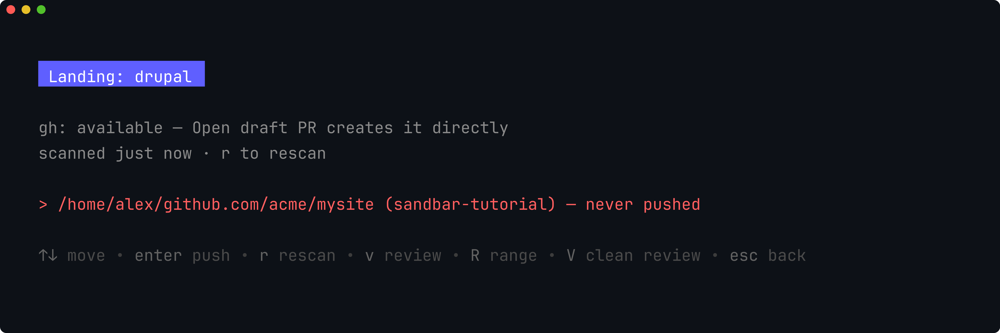
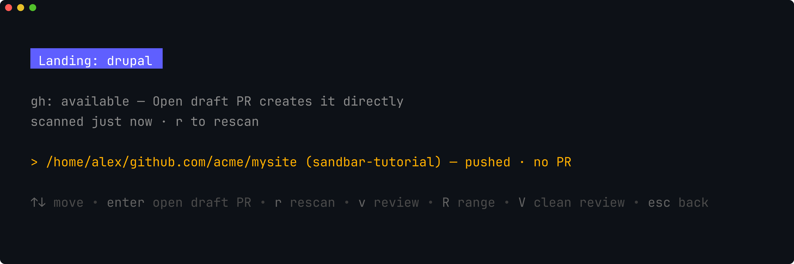
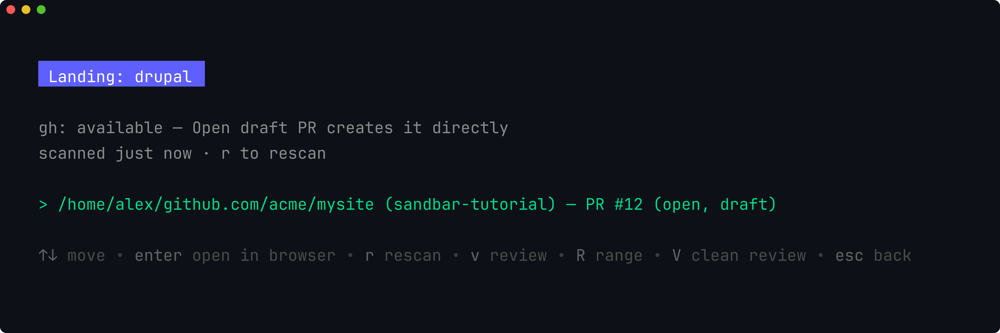

Your first pull request
This is the loop you'll repeat every day with sandbar: an agent makes a change in its VM, you review it in your browser, and the change leaves the VM as a pull request. Sandbar never copies the code to your workstation: the VM pushes it straight to GitHub.
It picks up where the quickstart left off. In this tutorial you'll:
- Have Claude Code make a small change on a new branch.
- Review the change in your browser and leave a comment.
- Have Claude Code apply your comment.
- Push the branch and open a draft pull request from the board.
By the end, you'll have a draft pull request on GitHub with Claude Code's change, reviewed by you before it left the VM.
Before you start
You need:
- The
drupalVM from the quickstart, running, with Claude Code signed in. - A project on GitHub that you can push to. Landing opens pull requests on GitHub only. If you used your fork of the demo site in the quickstart, that's the one, and your pull request opens in your fork.
-
The token you gave the VM in the quickstart, with Contents: Read and write. If you created the VM without one, see GitHub and GitLab tokens to add it.
-
The GitHub CLI,
gh, installed and signed in on your workstation (gh auth login). Sandbar uses it to open the pull request as you, not as the VM.
Note: Without gh, everything still works up to the last step, and sandbar opens GitHub's compare page instead, where you can open the pull request yourself.
1. Ask Claude Code for a change
On the board, press S on the drupal tile. In your project folder, start Claude Code if it isn't running:
Type this prompt and press enter:
Create a branch called sandbar-tutorial. In README.md, add a short "Local development" section that explains how to start the site with DDEV. Commit the change.
Claude Code creates the branch, edits README.md and commits, without asking for approval.
2. Open the Landing pane
Press ctrl+a, then d, to go back to the board. Claude Code keeps running.
Press l on the drupal tile. The Landing pane lists the Git checkouts in the VM, one row per folder: its path, the branch checked out there, and whether that branch has been pushed or has a pull request. Your project has one row, showing the sandbar-tutorial branch and never pushed.

If the row still shows your old branch, press r to scan the VM again.
3. Review the change in your browser
With your project's row selected, press v. Sandbar starts a review with self-review and opens it in your browser. You'll see README.md with Claude Code's new section highlighted.
Leave one comment on a line in the new section, asking for something you'd like changed, for example:
Click Finish Review. Sandbar saves your comments in the VM as review.xml, in your project folder, and the review closes.
Learn more about sandbar's review tools.
4. Have Claude Code apply your comment
Press esc to leave the Landing pane, then S on the tile to return to Claude Code.
Type:
Claude Code reads your comment and updates README.md. If it already applied the review on its own, skip this. Then ask it to commit:
5. Push the branch
Press ctrl+a, then d, and press l on the tile again. Your project's row offers push at the bottom of the pane.
Press enter. Sandbar runs git push inside the VM, using the VM's token, and shows its output. When the push finishes, you're back on the pane, and the row offers open draft PR.

6. Open a draft pull request
Press enter again. Sandbar creates a draft pull request on GitHub with your workstation's gh, and shows its number and link.
Note: The VM's token can push branches, but with the recommended permissions it can't open or merge pull requests. Opening one happens on your workstation, with your own gh, so an agent can push its work but only you decide what becomes a pull request.
Back on the pane, the row offers open in browser. If it doesn't yet, press r.

Press enter to open the pull request. You'll see both of Claude Code's commits, ready for you or a teammate to review.
What you did
You ran the full loop: Claude Code made a change in its VM, you reviewed it in your browser, Claude Code applied your feedback, and the change left the VM as a draft pull request. The VM's token pushed the branch, and your own gh opened the pull request.
Next time, skip the tutorial branch name and ask Claude Code for real work. For example, give it the URL of a GitHub issue and ask it to work on that issue. With Issues: Read on the VM's token, it can read the issue with gh.
Next steps
- Review changes in a browser: review part of a branch, or pick up a review you left.
- Landing: every state a checkout can be in, and what to do when
ghisn't usable. - Security model: why the VM pushes and your workstation opens the pull request.